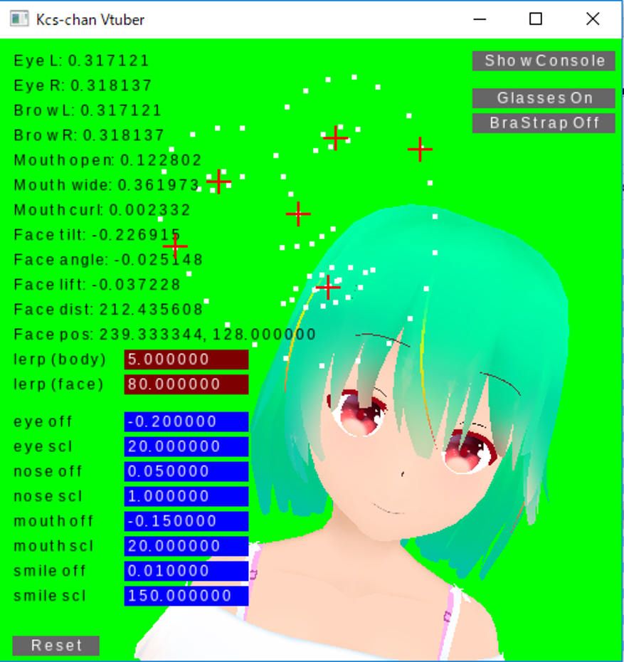
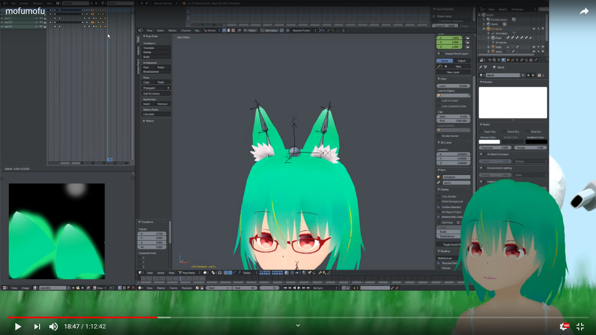

KCSTuberとは？
KCSTuberはKCS(慶應義塾大学公認学生団体 Computer Society)の看板娘である"KCSちゃん"に憑依することの出来るアプリケーションです．Webカメラから取得したユーザの顔に連動してKCSちゃんを動かしたり表情を変化させることができます．KCSTuberはKCSに所属する部員のうち有志の数名によって作成されました．部員がスクラッチから作った描画エンジンの上で画像処理ライブラリを動かして顔検出を行っています．また"KCSちゃん"も有志の部員たちによって誕生したキャラクターで，デザインからモデル作成まですべてサークル内で行われています．


KCSTuberは既存の主流なVTuberのようにキャラクターと魂が1対1対応ではなく，"KCSちゃん"という１人のキャラクターに対していろいろな部員の魂を実装する，あるいはKCSちゃんとともに活動するというコンセプトのもとに作られました．2018年12月現在，VTuberというコンテンツはIT関係のノウハウのある企業や一部のクリエイターによって提供されていますが，ライバーを志す人全員が自ら自分のキャラクターを作成することが出来るというわけではありません．そうなった時に，例えばVocaloidに歌ってもらったり，Voiceroidにトークをしてもらったように，KCSちゃんを通してライブ活動を行うことができたらどうか，と考えたことが発端の一つとなっています．
KCSTuberによるライバー活動は数名の部員によって行われています．放送内容によってはアーカイブが非公開になっているものも多いですが，今後頑張って増やしていこうと思っています．応援していただければ幸いです．